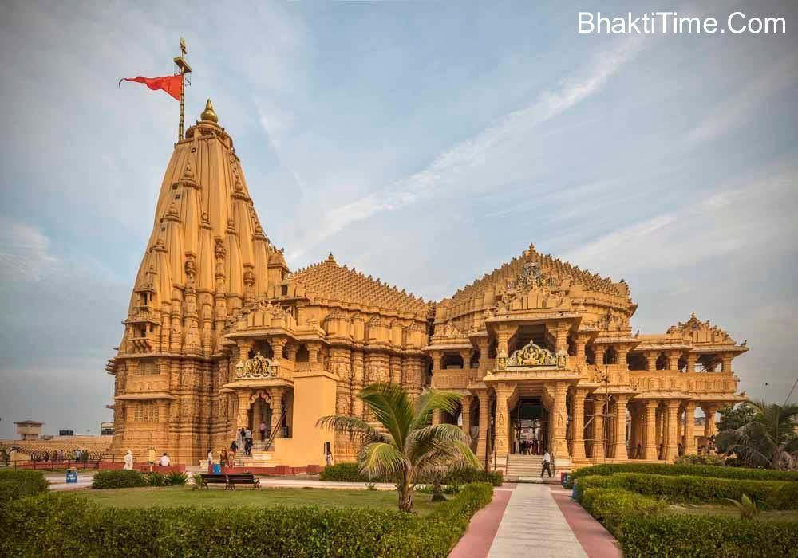
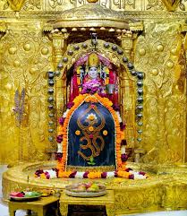

Somnath Mahadev Temple


Shitala Mata Temple
Somnath Temple is a Hindu temple, located in Prabhas Patan, Veraval in Gujarat, India. It is one of the most sacred pilgrimage sites the Tirtha Kshetra for Hindus and is the first among the twelve jyotirlinga shrines of Shiva.[1] It is unclear when the first version of the Somnath temple was built, with estimates varying between the early centuries of the 1st millennium and about the 9th century CE.
Various texts, including the Mahabharata and Bhagavata Purana, mention a tirtha (pilgrimage site) at Prabhas Patan on the coastline of Saurashtra, where the later temple was, but archaeology has not found traces of an early temple, though there was a settlement there.
In the late 19th and early 20th centuries, historians and archaeologists of the colonial era actively studied the Somnath temple because its ruins showed a historic Hindu temple that was turning into an Islamic mosque.
After India's independence, those ruins were demolished, and the present Somnath temple was reconstructed in the Māru-Gurjara style of Hindu temple architecture. The contemporary Somnath temple's reconstruction was started under the orders of the first Deputy Prime Minister of India, Vallabhbhai Patel. The reconstruction was completed in May 1951.
Location
The Somnath temple is located along the coastline in Prabhas Patan, Veraval, Saurashtra region of Gujarat. It is about 400 kilometres (249 mi) southwest of Ahmedabad, 82 kilometres (51 mi) south of Junagadh – another major archaeological and pilgrimage site in Gujarat. It is about 7 kilometres (4 mi) southeast of the Veraval railway junction, about 130 kilometres (81 mi) southeast of the Porbandar airport and about 85 kilometres (53 mi) west of the Diu airport.
The Somnath temple is located close to the ancient trading port of Veraval, one of three in Gujarat from where Indian merchants departed to trade goods. The 11th-century Persian historian Al-Biruni states that Somnath has become so famous because "it was the harbor for seafaring people and a station for those who went to and fro between Sufala in the country of Zanj (east Africa) and China".
Combined with its repute as an eminent pilgrimage site, its location was well known to the kingdoms within the Indian subcontinent.[17][18] Literature and epigraphical evidence suggest that the medieval-era Veraval port was also actively trading with the Middle East and Southeast Asia. This brought wealth and fame to the Veraval area, as well as the temple.
The site of Prabhas Patan was occupied during the Indus Valley Civilisation, 2000–1200 BCE. It was one of very few sites in the Junagadh district to be so occupied. After abandonment in 1200 BCE, it was reoccupied in 400 BCE and continued into the historical period. Prabhas is also close to the other sites similarly occupied: Junagadh, Dwarka, Padri and Bharuch.
Nomenclature and significance
Somnath means "Lord of the Soma" or "moon".[note 1] The site is also called Prabhasa ("place of splendor").[21] Somnath temple has been a jyotirlinga site for the Hindus, and a holy place of pilgrimage (tirtha). It is one of five most revered sites on the seacoast of India, along with the nearby Dwaraka in Gujarat, Puri in Odisha, Rameswaram and Chidambaram in Tamil Nadu.
Scriptural mentions
Many Hindu texts provide a list of the most sacred Shiva pilgrimage sites, along with a guide for visiting the site. The best known were the Mahatmya genre of texts. Of these, Somnatha temple tops the list of jyotirlingas in the Jnanasamhita – chapter 13 of the Shiva Purana, and the oldest known text with a list of jyotirlingas. Other texts include the Varanasi Mahatmya (found in Skanda Purana), the Shatarudra Samhita and the Kothirudra Samhita